Трансівери, Recon, Capture, Replay та утиліти¶
Скріншоти з вашого пристрою
Усі знімки зроблено на HackRF One + PortaPack H2 з прошивкою Mayhem v2.4.0. Більшість застосунків показано у стані «за замовчуванням», до приймання чи передавання. Опис складено за вікі Mayhem та екранами; дрібні відмінності залежать від версії прошивки.
Інші розділи головного меню: Transceiver, Recon, Capture, Replay, Remote, Looking Glass, Utilities (з меню Debug) і Games.
Меню розділів¶
Transceiver¶
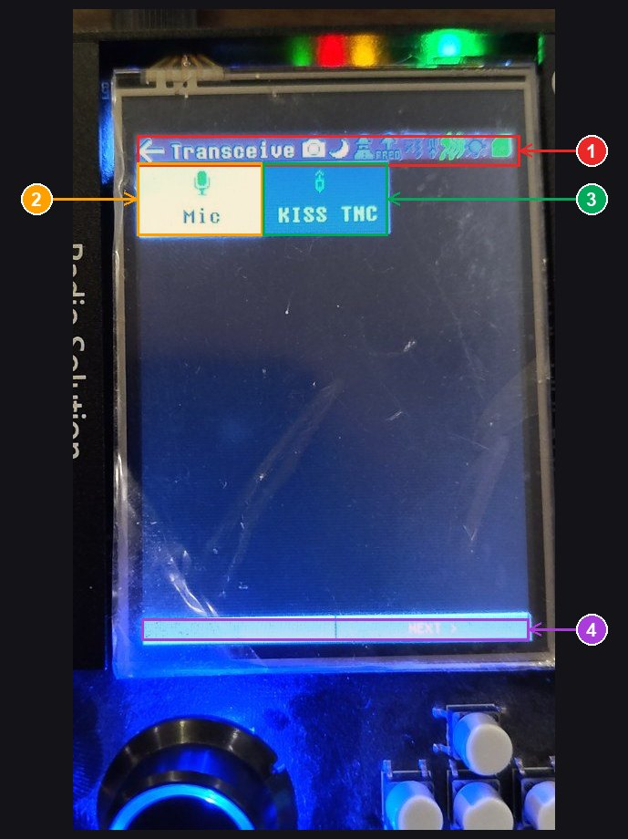
Пункти меню: Mic, KISS TNC.
Елементи екрана:
- Назва розділу та значки стану
- Mic — голосовий трансівер (вибрано)
- KISS TNC — пакетний TNC
- NEXT › (на цій сторінці немає наступної)
Utilities — сторінка 1¶
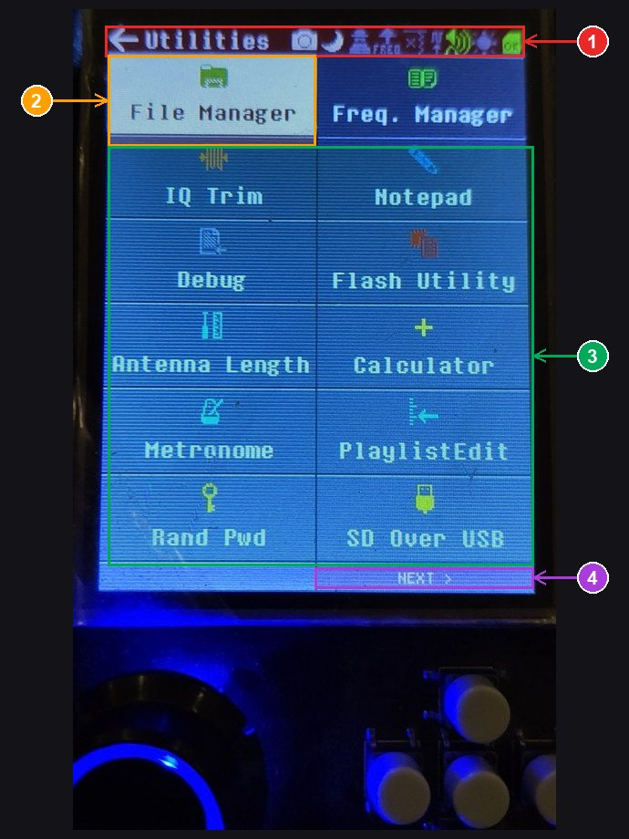
Пункти меню: File Manager, Freq. Manager, IQ Trim, Notepad, Debug, Flash Utility, Antenna Length, Calculator, Metronome, PlaylistEdit, Rand Pwd, SD Over USB.
Елементи екрана:
- Назва розділу та значки стану
- Вибрана кнопка (File Manager)
- Кнопки утиліт (2 стовпці)
- NEXT › — наступна сторінка
Utilities — сторінка 2¶
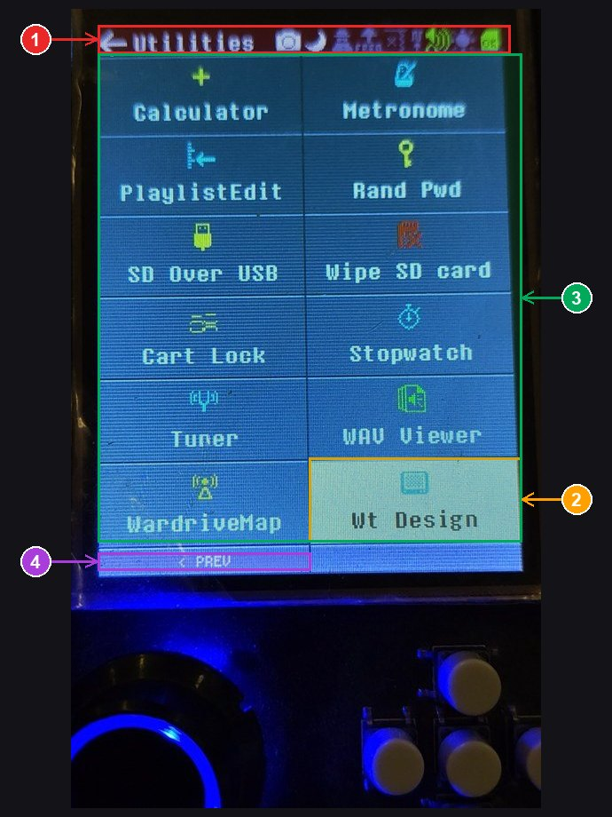
Пункти меню: Calculator, Metronome, PlaylistEdit, Rand Pwd, SD Over USB, Wipe SD card, Cart Lock, Stopwatch, Tuner, WAV Viewer, WardriveMap, Wt Design (Waterfall Designer).
Елементи екрана:
- Назва розділу та значки стану
- Вибрана кнопка (Wt Design)
- Кнопки утиліт
- ‹ PREV — попередня сторінка
Games¶
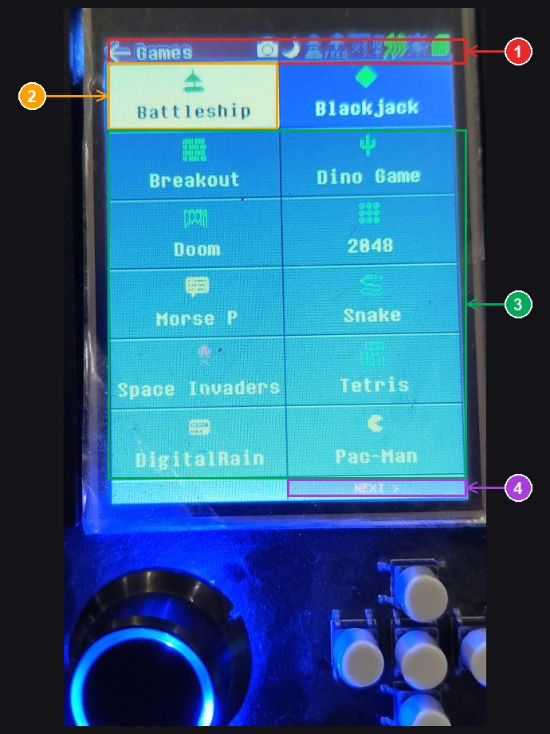
Пункти меню: Battleship, Blackjack, Breakout, Dino Game, Doom, 2048, Morse P, Snake, Space Invaders, Tetris, DigitalRain, Pac-Man.
Елементи екрана:
- Назва розділу та значки стану
- Вибрана кнопка (Battleship)
- Кнопки ігор
- NEXT › — наступна сторінка
Трансівери¶
Microphone (трансівер)¶
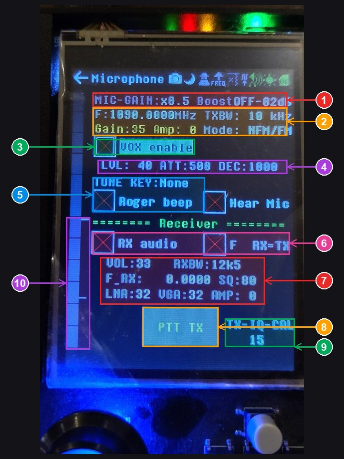
Напівдуплексний голосовий трансівер: NFM, WFM, AM, USB, LSB, DSB-SC; PTT і VOX, CTCSS, Roger beep, окремі частоти TX/RX.
- Кнопка PTT TX, TX-IQ-CAL, прапорці Roger beep, Hear Mic, RX audio.
Докладніше на сторінці застосунку
Елементи екрана:
- MIC-GAIN, Boost — підсилення мікрофона
- F — частота, TXBW — смуга TX, Gain, Amp, Mode
- VOX enable — автоматичне керування голосом
- LVL, ATT, DEC — параметри VOX
- TONE KEY (CTCSS), Roger beep, Hear Mic
- Receiver: RX audio, F RX=TX
- VOL, RXBW, F_RX, SQ (шумоподавлювач), LNA/VGA/AMP
- PTT TX — утримувати для передавання
- TX-IQ-CAL — калібрування
- Індикатор рівня мікрофона
KISS TNC¶
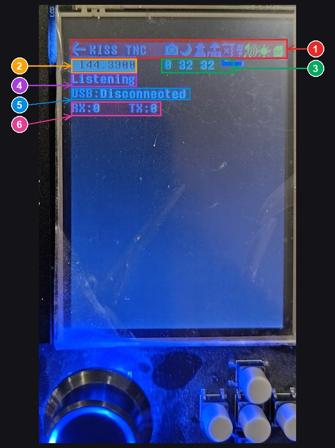
Контролер вузла терміналу в режимі KISS для пакетного радіозв'язку / APRS (AX.25).
- Статус USB (Disconnected), лічильники RX/TX.
Докладніше на сторінці застосунку
Елементи екрана:
- Рядок заголовка
- Частота (144,39 МГц)
- AMP / LNA / VGA
- Listening — стан
- USB — стан зв'язку з комп'ютером (Disconnected)
- RX / TX — лічильники пакетів
Recon, Capture, Replay, Remote, Looking Glass¶
Recon¶
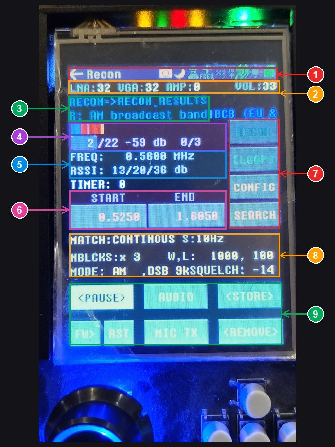
Сканер частот і «мисливець за сигналами»: сканує списки частот та діапазони, реєструє знайдені сигнали.
- Кнопки PAUSE, AUDIO, STORE, CONFIG, SEARCH, RECON.
Докладніше на сторінці застосунку
Елементи екрана:
- Рядок заголовка
- LNA / VGA / AMP — підсилення; VOL — гучність
- Поточний режим і список/діапазон, що скануються (RECON_RESULTS)
- Індикатор RSSI, номер знайденого / всього (2/22), рівень сигналу
- Поточна частота та рівні RSSI (поточний / середній / макс.)
- START / END — межі діапазону сканування
- RECON, LOOP, CONFIG, SEARCH — керування й налаштування
- Режим збігу, крок, смуга, поріг шумоподавлювача (SQUELCH)
- PAUSE, AUDIO, STORE, FW>, RST, MIC TX, REMOVE
Replay¶
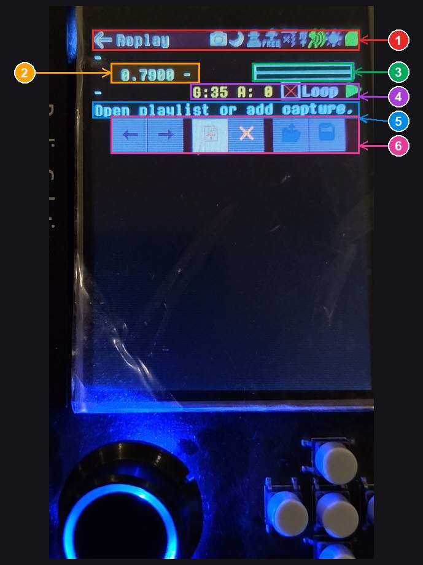
Передає записані файли IQ (.C16/.C8/.CU8) або плейлисти .PPL.
- Кнопки навігації між треками, додавання/видалення файлу, відкриття й збереження плейлиста; прапорець Loop.
Докладніше на сторінці застосунку
Елементи екрана:
- Рядок заголовка
- Частота (і частота дискретизації) поточного треку
- Індикатори прогресу: плейлист (верх) і файл (низ)
- Gain, Amp, Loop, ▶ Play/Stop
- Підказка: відкрийте плейлист або додайте запис
- ◄ ► трек, додати, видалити, відкрити та зберегти плейлист
Capture¶
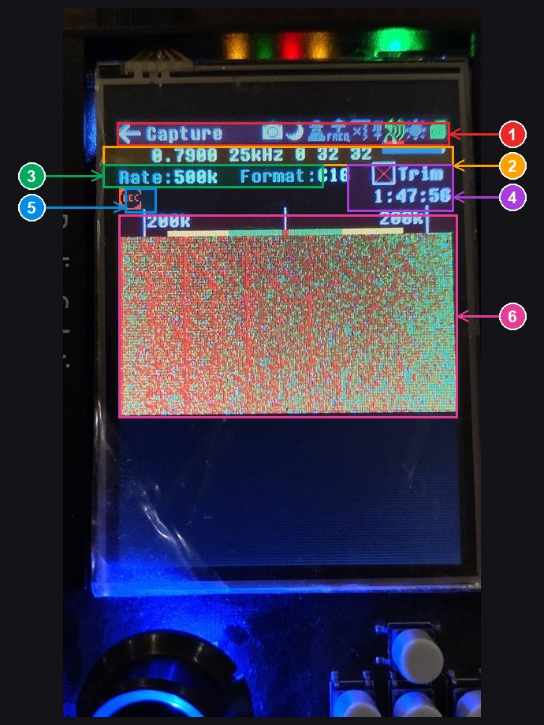
Записує IQ-дані на SD-карту у форматі .C16 (або .C8) разом з метаданими.
- Rate — частота дискретизації (рекомендовано ≤ 500 кГц), Format (C16/C8), Trim — автообрізання; червона кнопка запускає запис, нижче — водоспад.
Докладніше на сторінці застосунку
Елементи екрана:
- Рядок заголовка
- Частота запису, крок, підсилення AMP/LNA/VGA і RSSI
- Rate — частота дискретизації; Format — C16 або C8
- Trim — автообрізання; тривалість / вільне місце
- REC — червона кнопка запуску запису
- Водоспад спектра в смузі запису
Remote¶
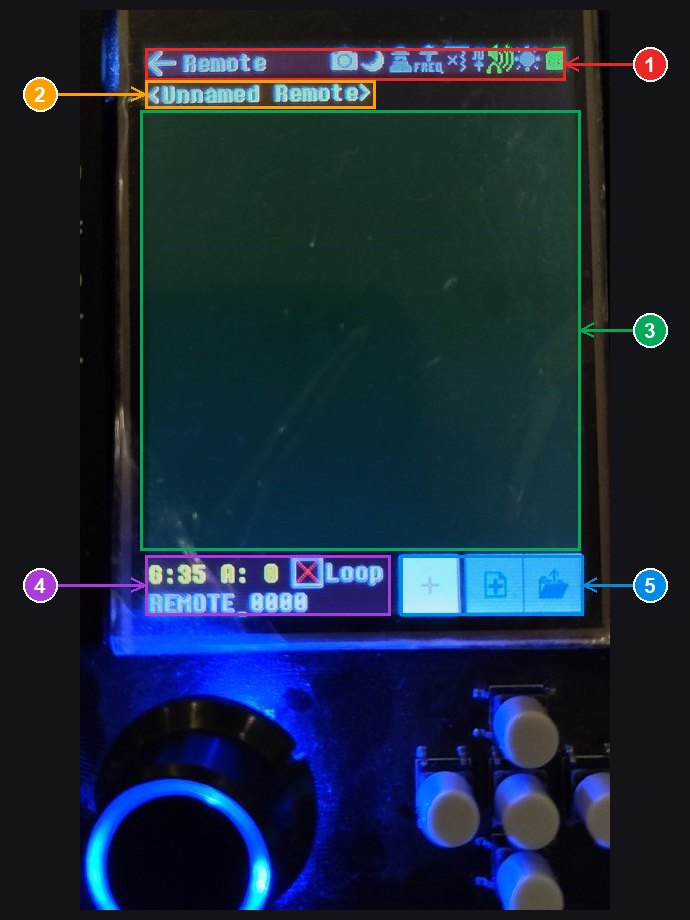
Створює власну панель кнопок, прив'язаних до файлів запису для одним дотиком.
- Файли
.REMу теціREMOTES/; кнопки + (додати), Новий, Відкрити; прапорець Loop.
Докладніше на сторінці застосунку
Елементи екрана:
- Рядок заголовка
- Назва панелі (
) — вибрати, щоб перейменувати - Поле кнопок панелі (до 12 кнопок 4×3); під час передавання — міні-водоспад
- Gain / Amp, Loop та ім'я файлу REMOTE_0000
- «+» додати кнопку, нова панель, відкрити панель
Looking Glass¶
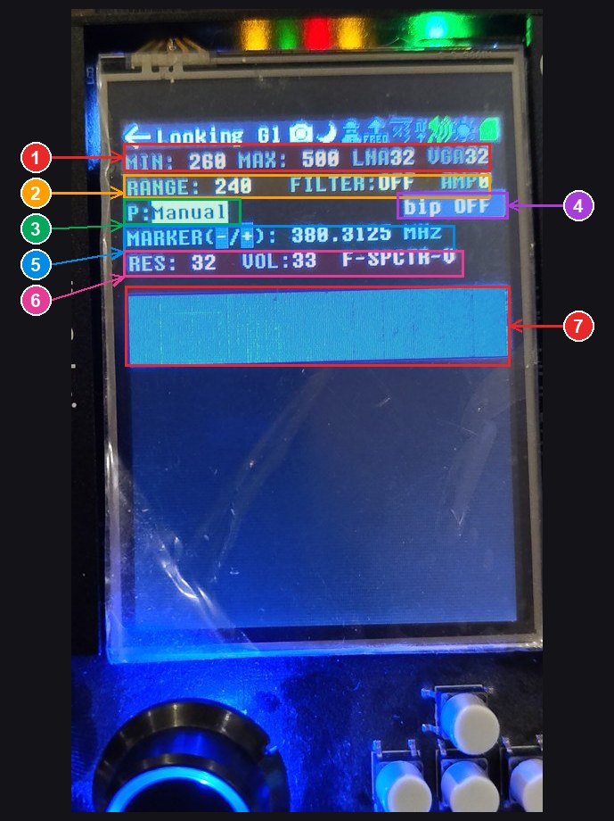
Широкосмуговий спектр-водоспад по великому діапазону частот.
- MIN/MAX/RANGE — межі діапазону, FILTER, PRESET, режими відображення SPECTR/LIVE-V/PEAK-V, F-/S- (швидко/точно).
Докладніше на сторінці застосунку
Елементи екрана:
- MIN / MAX — межі діапазону, LNA/VGA — підсилення
- RANGE — ширина діапазону; FILTER — згладжування; AMP
- PRESET — готові діапазони з SD-карти (Manual)
- bip — звуковий сигнал при виявленні
- MARKER — маркер частоти, переміщується енкодером
- RES — роздільність; VOL — гучність; режим F-SPCTR-V
- Область водоспаду (з'являється після початку сканування)
Утиліти¶
File Manager¶
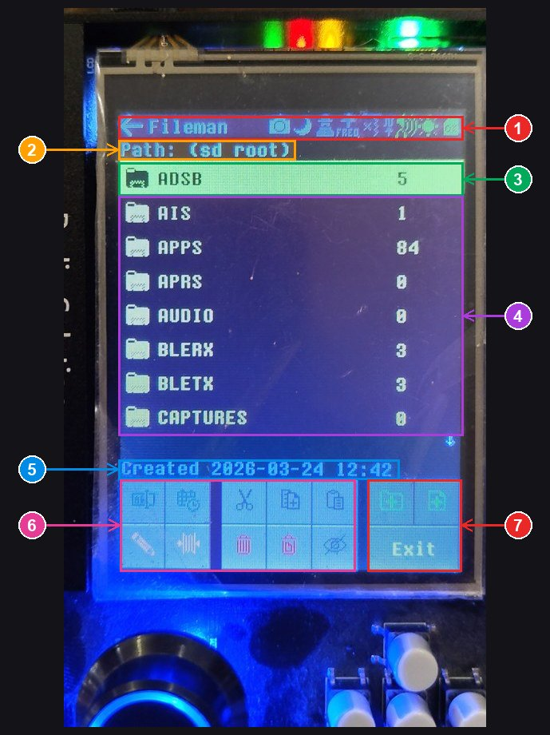
Файловий менеджер SD-карти: перегляд тек, копіювання, перейменування, видалення.
- Показано кореневий каталог SD-карти (
AIS,APPS,AUDIO,CAPTURESтощо) і кількість файлів у теках.
Докладніше на сторінці застосунку
Елементи екрана:
- Рядок заголовка
- Path — поточний шлях (корінь SD-карти)
- Вибрана тека (ADSB, 5 файлів)
- Список тек і файлів: назва та кількість елементів
- Created — дата створення вибраного
- Дії: вирізати, копіювати, вставити, видалити, перейменувати…
- Інші дії та Exit — вийти
Freq. Manager¶
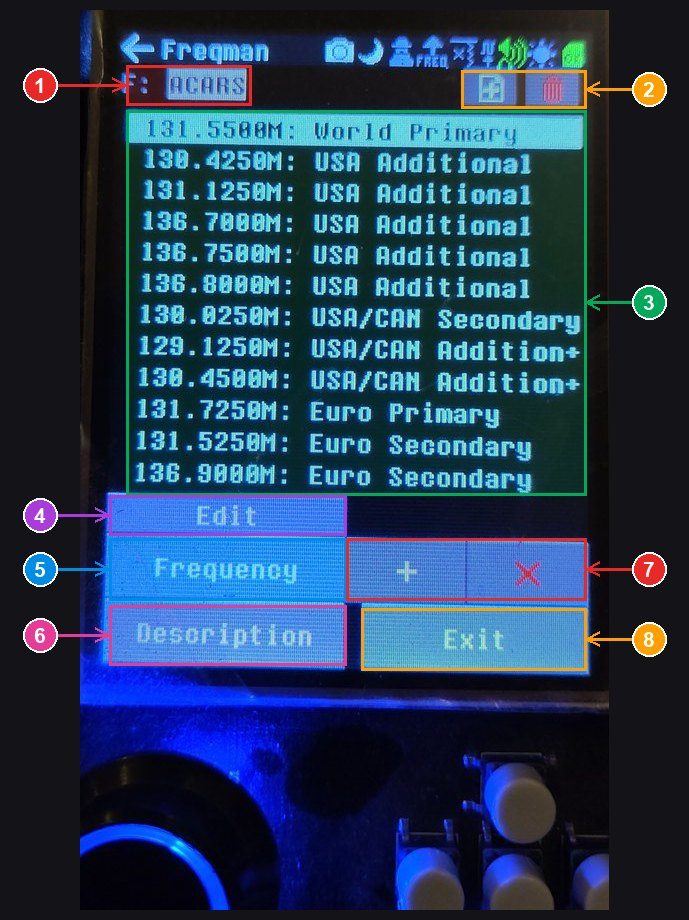
Менеджер збережених частот (списки freqman): редагування частоти й опису.
- Кнопки Edit, Frequency, Description, +, Exit.
Докладніше на сторінці застосунку
Елементи екрана:
- F: — вибраний файл частот (ACARS)
- Додати / видалити файл списку
- Список частот з описами (вибрана підсвічено)
- Edit — редагувати запис
- Frequency — змінити частоту
- Description — змінити опис
-
- додати запис, × видалити запис
- Exit — вихід
IQ Trim¶
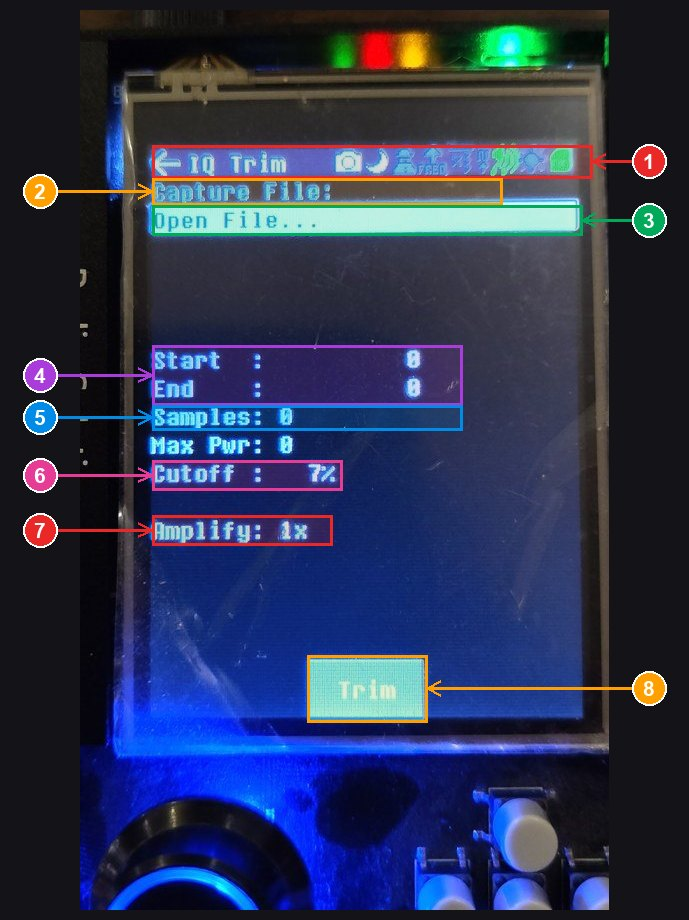
Обрізає записаний файл IQ, залишаючи лише корисну частину сигналу.
- Capture File — файл, Start/End/Samples/Max Pwr/Cutoff/Amplify, кнопка Trim.
Докладніше на сторінці застосунку
Елементи екрана:
- Рядок заголовка
- Capture File — файл IQ
- Open File… — відкрити файл запису
- Start / End — межі корисної частини (у відліках)
- Samples, Max Pwr — кількість і потужність
- Cutoff — поріг відсікання (7%)
- Amplify — підсилення результату
- Trim — виконати обрізання
Notepad¶
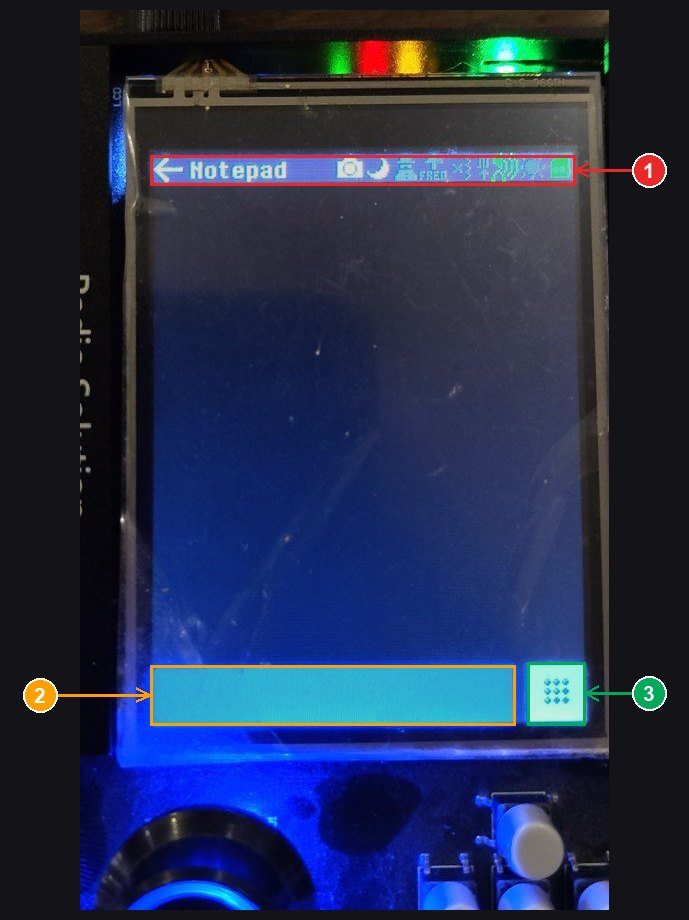
Простий текстовий блокнот (наприклад, для файлу blacklist у SETTINGS).
Докладніше на сторінці застосунку
Елементи екрана:
- Рядок заголовка
- Поле введення тексту
- Кнопка екранної клавіатури
Flash Utility¶
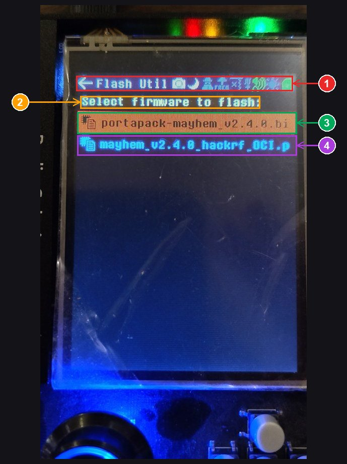
Оновлення прошивки з файлу на SD-карті (.bin або .ppfw.tar).
- Показано вибір файлу прошивки; повний порядок дій — у розділі Оновлення прошивки.
Докладніше на сторінці застосунку
Елементи екрана:
- Рядок заголовка
- Select firmware to flash — виберіть прошивку
- portapack-mayhem_v2.4.0.bin — прошивка (вибрана, червоний фон)
- mayhem_v2.4.0_hackrf_OCI.ppfw.tar — повний пакет з додатками
Antenna Length¶
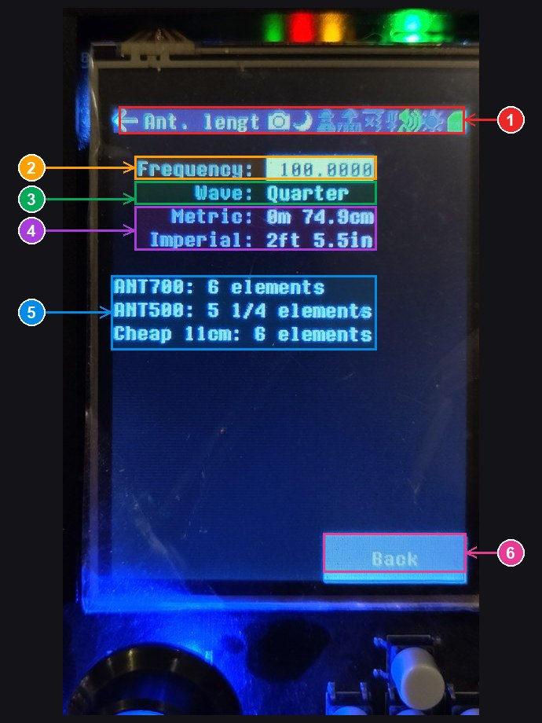
Калькулятор довжини антени за частотою (чверть хвилі, метрика й дюйми).
- Приклад: 100 МГц → чверть хвилі ≈ 74,9 см; підказки для антен ANT500/ANT700.
Докладніше на сторінці застосунку
Елементи екрана:
- Рядок заголовка
- Frequency — частота, для якої рахуємо
- Wave — частка хвилі (Quarter — чверть)
- Metric / Imperial — довжина в см та фут/дюйм
- Підказки для антен ANT700, ANT500 та простої 11 см
- Back — повернутися
Calculator¶
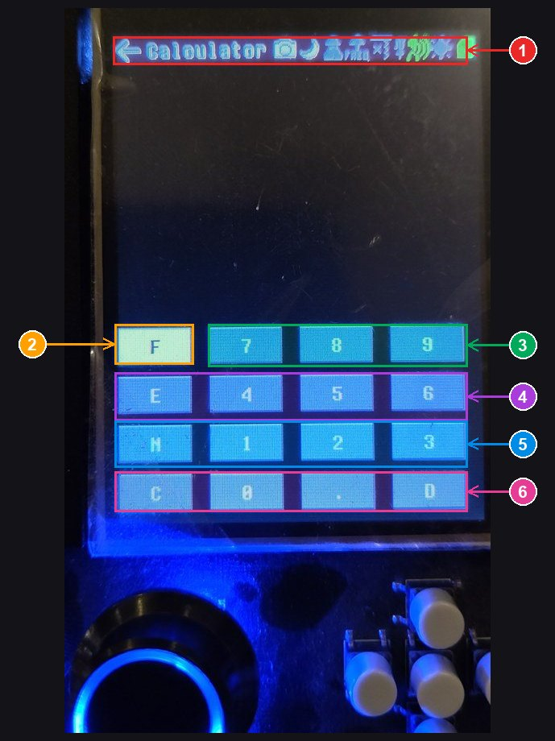
Калькулятор (з шістнадцятковими цифрами A–F).
Докладніше на сторінці застосунку
Елементи екрана:
- Рядок заголовка
- Клавіші A–F (hex) — F вибрано
- Цифри 7, 8, 9
- E, 4, 5, 6 — другий ряд
- N, 1, 2, 3 — третій ряд
- C — скинути; 0, «.», D — ввід і дія
Metronome¶
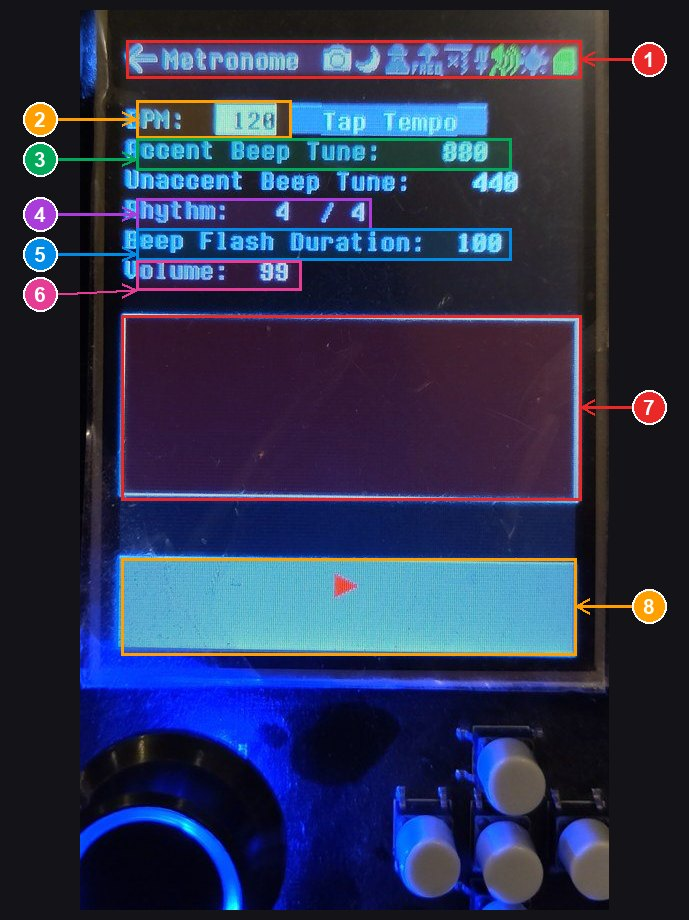
Метроном: BPM, тони акцентованих і слабких ударів, розмір, тривалість спалаху.
- Кнопка Tap Tempo задає темп дотиками.
Докладніше на сторінці застосунку
Елементи екрана:
- Рядок заголовка
- BPM — темп; Tap Tempo — задати дотиками
- Accent / Unaccent Beep Tune — тони сильної й слабкої долі
- Rhythm — розмір (4/4)
- Beep Flash Duration — тривалість спалаху
- Volume — гучність
- Область візуального спалаху ритму
- ▶ Старт/стоп метронома
Playlist Editor¶
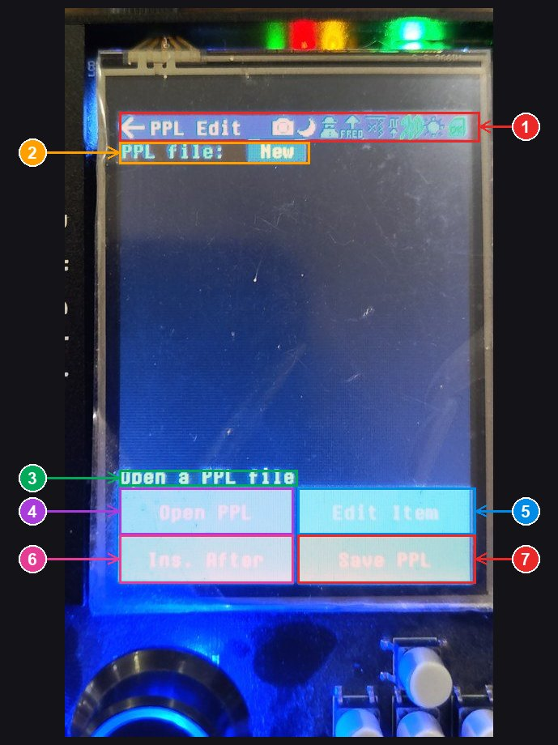
Редактор плейлистів .PPL для застосунку Replay.
- Кнопки відкриття, додавання/видалення записів і збереження.
Докладніше на сторінці застосунку
Елементи екрана:
- Рядок заголовка
- PPL file — поточний файл плейлиста (New)
- Підказка: відкрийте файл PPL
- Open PPL — відкрити плейлист
- Edit Item — редагувати запис
- Ins. After — вставити після
- Save PPL — зберегти
SD Over USB¶
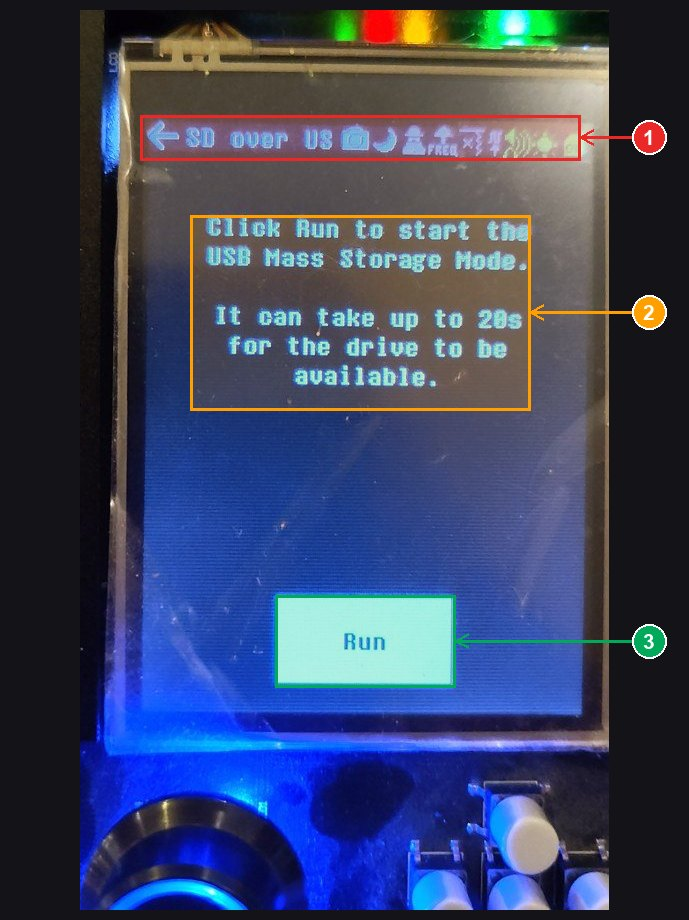
Режим USB-накопичувача: SD-карта PortaPack стає диском на комп'ютері.
- Натисніть Run і зачекайте до 20 с, поки диск з'явиться.
Докладніше на сторінці застосунку
Елементи екрана:
- Рядок заголовка
- Інструкція: натисніть Run, режим USB Mass Storage; диск з'явиться до 20 с
- Run — запустити режим USB-накопичувача
Random Password¶
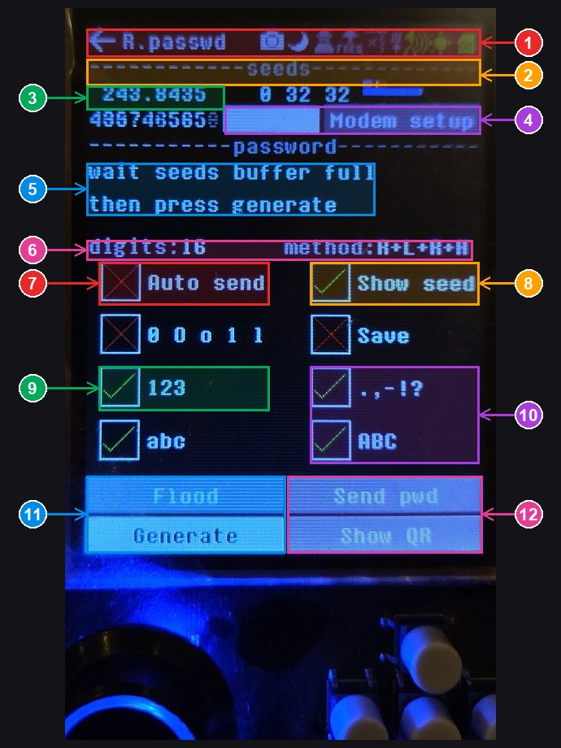
Генератор випадкових паролів із ентропії радіошуму.
- Опції: довжина (digits), набори символів (123, abc, ABC, спецсимволи), Generate, Show QR.
Докладніше на сторінці застосунку
Елементи екрана:
- Рядок заголовка
- seeds — ентропія (джерело випадковості)
- Частота (243,8 МГц) і AMP/LNA/VGA
- Modem setup — параметри
- Стан: очікуйте заповнення буфера й натисніть Generate
- digits — довжина пароля; method — спосіб
- Auto send — автоматично надсилати
- Show seed — показувати seed
- 123 / abc — набори символів
- Спецсимволи та ABC
- Flood та Generate
- Send pwd та Show QR
Wipe SD card¶
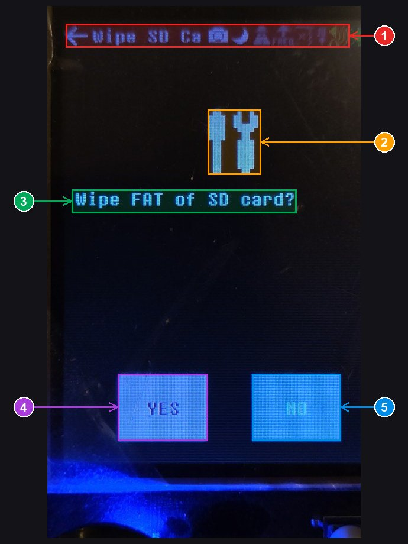
Форматує FAT SD-карти — усі дані буде втрачено. Червоний значок означає руйнівну утиліту.
- Запит «Wipe FAT of SD card?» — YES / NO.
Докладніше на сторінці застосунку
Елементи екрана:
- Рядок заголовка
- Піктограма руйнівної утиліти (червона)
- Wipe FAT of SD card? — підтвердження форматування
- YES — відформатувати (УСІ ДАНІ БУДУТЬ ВТРАЧЕНІ)
- NO — скасувати
Cart Lock¶
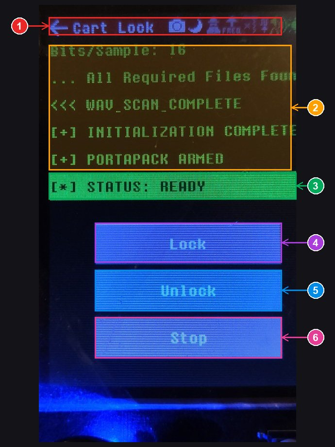
Утиліта блокування візків (Lock/Unlock/Stop).
- Журнал: перевірка файлів, ініціалізація, статус READY.
Докладніше на сторінці застосунку
Елементи екрана:
- Рядок заголовка
- Журнал ініціалізації (файли знайдено, PORTAPACK ARMED)
- STATUS: READY — стан готовності
- Lock — заблокувати
- Unlock — розблокувати
- Stop — зупинити
Tuner¶
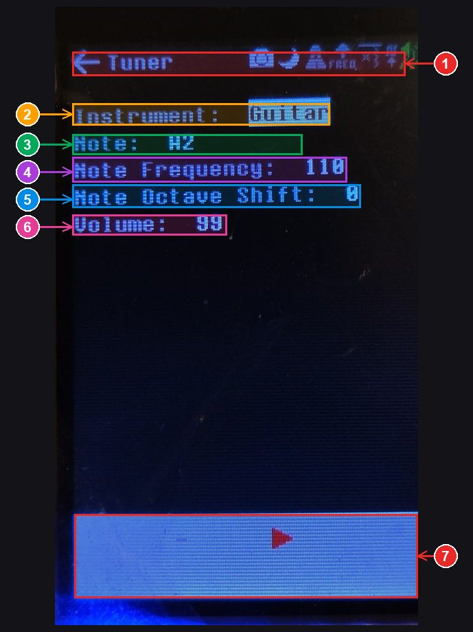
Тюнер-підказка: програє еталонну ноту для налаштування інструмента.
- Вибір інструмента (Guitar), ноти, частоти, гучність.
Докладніше на сторінці застосунку
Елементи екрана:
- Рядок заголовка
- Instrument — інструмент (Guitar)
- Note — нота (A2)
- Note Frequency — частота ноти (110 Гц)
- Note Octave Shift — зсув октави
- Volume — гучність
- ▶ Програти ноту
Stopwatch¶
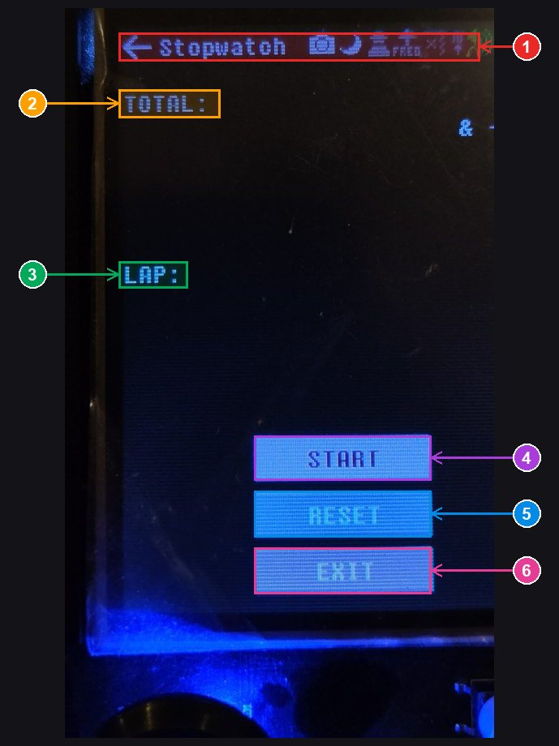
Секундомір із колами.
- Кнопки START, RESET, EXIT.
Докладніше на сторінці застосунку
Елементи екрана:
- Рядок заголовка
- TOTAL — загальний час
- LAP — час кола
- START — запустити
- RESET — скинути (кола)
- EXIT — вийти
WAV Viewer¶
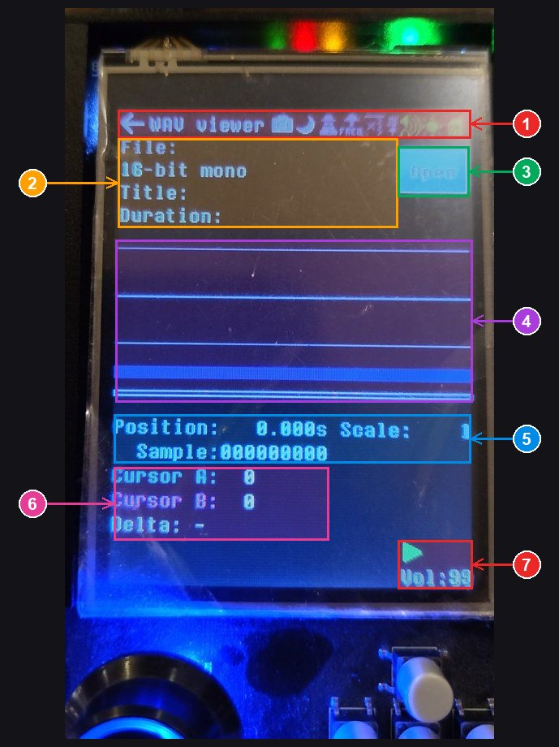
Переглядач форми сигналу WAV-файлів із курсорами A/B.
- Open — відкрити файл; Position, Scale, Cursor A/B, Delta.
Докладніше на сторінці застосунку
Елементи екрана:
- Рядок заголовка
- File, Title, Duration, формат (16-bit mono)
- Open — відкрити WAV
- Форма сигналу WAV з курсорами
- Position (позиція), Scale (масштаб), Sample
- Cursor A, Cursor B, Delta
- ▶ Відтворення; Vol — гучність
WAV Viewer (інший знімок)¶
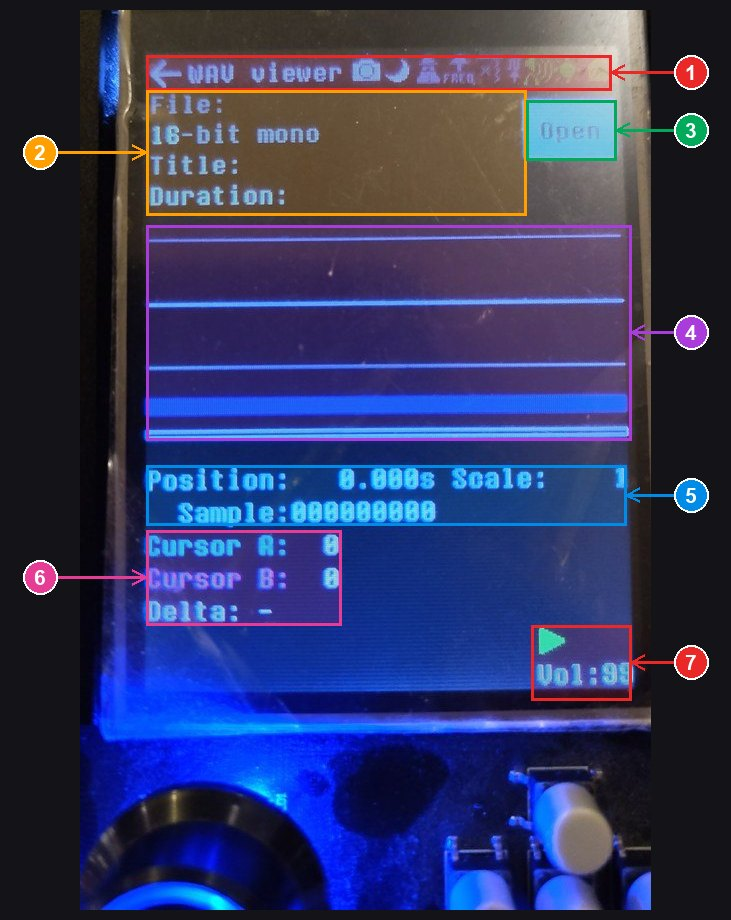
Той самий застосунок.
Докладніше на сторінці застосунку
Елементи екрана:
- Рядок заголовка
- File, Title, Duration, формат
- Open — відкрити WAV
- Форма сигналу WAV
- Position, Scale, Sample
- Cursor A / B, Delta
- ▶ та Vol
WardriveMap¶
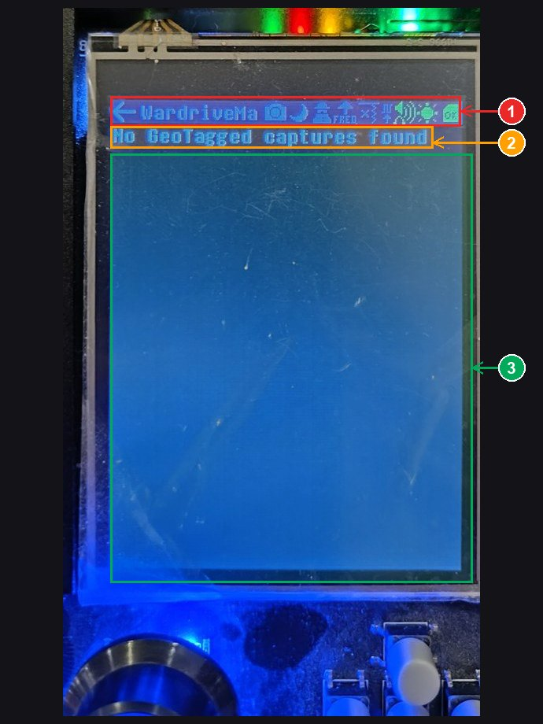
Показує на карті захоплення з прив'язкою до GPS.
- Повідомлення «No GeoTagged captures found» — записів з координатами ще немає.
Докладніше на сторінці застосунку
Елементи екрана:
- Рядок заголовка
- «No GeoTagged captures found» — немає записів із GPS
- Область карти WardriveMap
Waterfall Designer¶
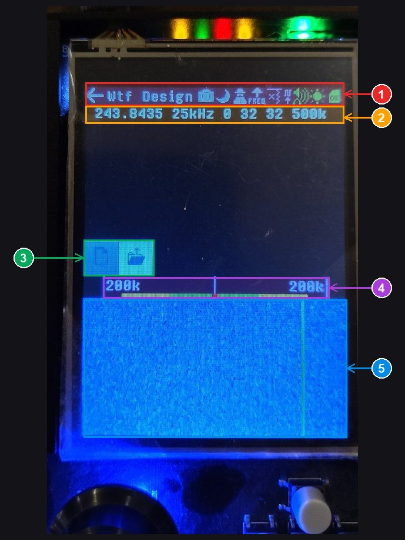
Налаштування кольорових схем водоспаду.
- Кнопки відкриття/збереження схеми, шкала частот.
Докладніше на сторінці застосунку
Елементи екрана:
- Рядок заголовка
- Частота, крок, підсилення, смуга (500k)
- Кнопки: новий / відкрити схему водоспаду
- Шкала частоти (±200 кГц) та маркер
- Водоспад із вибраною кольоровою схемою
Debug¶
Debug — меню (1)¶
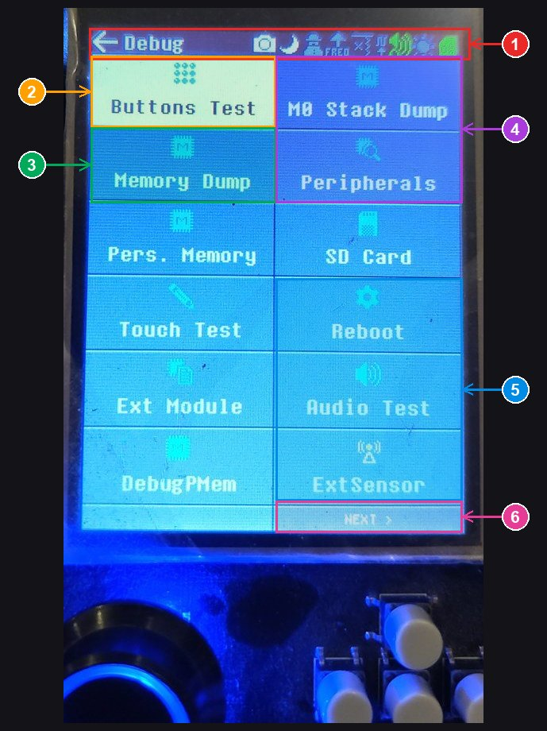
Діагностичні інструменти: Buttons Test, M0 Stack Dump, Memory Dump, Peripherals, Pers. Memory, SD Card, Touch Test, Reboot, Ext Module, Audio Test, DebugPMem, ExtSensor.
Докладніше на сторінці застосунку
Елементи екрана:
- Рядок заголовка (Debug)
- Buttons Test — тест кнопок (вибрано)
- Memory Dump, Pers. Memory, Touch Test, Ext Module, DebugPMem
- M0 Stack Dump, Peripherals, SD Card
- Reboot, Audio Test, ExtSensor
- NEXT › — наступна сторінка
Debug — меню (2)¶
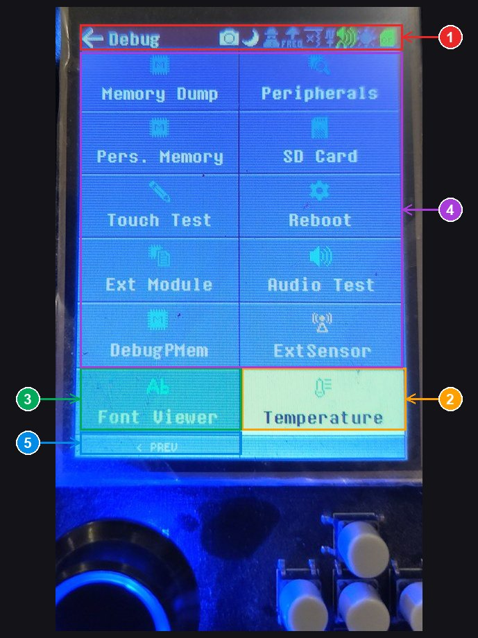
Продовження меню Debug: Font Viewer, Temperature та інші.
Докладніше на сторінці застосунку
Елементи екрана:
- Рядок заголовка (Debug)
- Temperature — вибрано (температура)
- Font Viewer — перегляд шрифтів
- Memory Dump, Pers. Memory, Touch Test, Ext Module, DebugPMem та ін.
- ‹ PREV — на попередню сторінку
Debug — Buttons Test¶
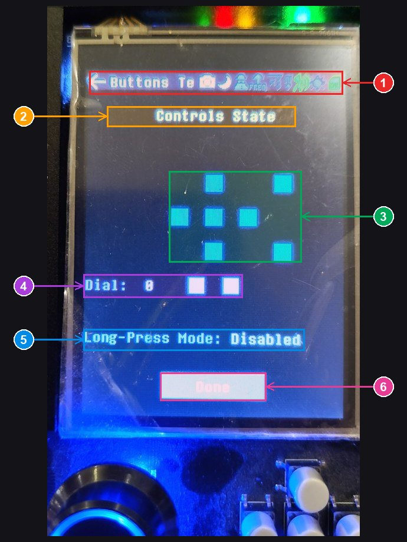
Тест кнопок: показує стан D-pad, обертання енкодера (Dial) і режим довгого натискання.
- Корисно для перевірки несправних кнопок і енкодера.
Докладніше на сторінці застосунку
Елементи екрана:
- Рядок заголовка
- Controls State — стан елементів керування
- D-pad: кожен квадрат світиться при натисканні
- Dial — значення енкодера й натискання
- Long-Press Mode — режим довгого натискання
- Done — завершити